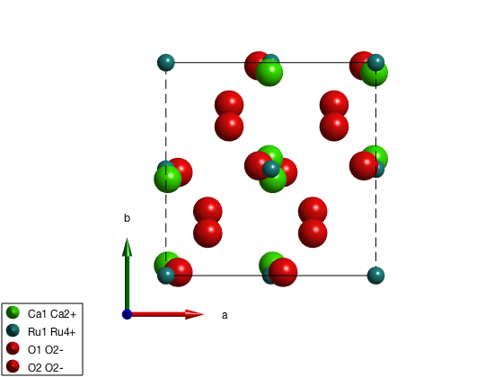
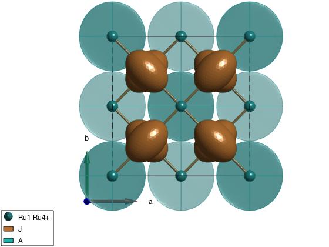
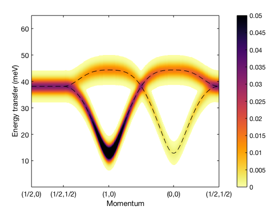

Description
This example reproduces the dispersion of the T and T' modes of Ca2RuO4 based on the parameters in the paper Nat. Phys. 13, 633 (2017).
Contents
Generate crystal structure and square lattice model
After loading the cif file is downloaded from the internet, we assign pseudospin S=1 for ruthenium atoms. Usually the assignment of spin quantum number works well for transition metals, however for rare earth compounds it depends on crystal field levels and the size of the spin-orbit coupling and the applied approximations. In this case an effective quantum number has to be added manually. To see to list of symmetry inequivalent atoms, use the command ca2ruo4.unit_cell which shows content of the crystallographic unit cell. Once finding that the Ru atom is the second in position, the corresponding spin quantum number can be changed directly.
ca2ruo4 = spinw('https://goo.gl/SYoJVS'); ca2ruo4.unit_cell.S(2) = 1; plot(ca2ruo4) ca2ruo4.gencoupling() ca2ruo4.addmatrix('label','J','value',1) ca2ruo4.addcoupling('bond',1,'mat','J') swplot.zoom(2)
Determine the symmetry allowed elements of the exchange interactions
Analyzing the symmetry allowed exchange matrix elements tells us that pseudo dipolar interactions and Dzyaloshinskii-Moriya interactions are allowed between first neighbor spins.
ca2ruo4.getmatrix('mat','J')
The symmetry analysis of the coupling between atom 3 and atom 4:
lattice translation vector: [1,1,0]
distance: 3.855 Angstrom
center of bond (in lattice units): [0.750,0.750,0.000]
label of the assigned matrix: 'J'
allowed elements in the symmetric matrix:
S = | F| C| B|
| C| E| A|
| B| A| D|
allowed components of the Dzyaloshinskii-Moriya vector:
D = [ D1, D2, D3]
Show the bond directional interactions
Here we visualize the bond directional interactions represented as ellipsoids on top of the bonds. This helps to understand the symmetry operations that SpinW applies and makes debugging of mistakes in the code easier. Here we use J = 1 and A = 0.5 as an example.
J = 1; X = 0.5; Jmat = [J X 0;X J 0;0 0 J]; ca2ruo4.addmatrix('label','J','value',Jmat) plot(ca2ruo4,'range',[1 1 1]) swplot.zoom(2)

Assign values to the exchange matrix
Using values from the paper and including single ion anisotropy. Numbers are taken from the Supplementary Materials.
J = 5.2; a = 0.10*J; e = 1; E = 21.5; X = 1.0; Jmat = [J X 0;X J 0;0 0 J-a]; Amat = [e 0 0; 0 0 0; 0 0 E]; ca2ruo4.addmatrix('label','J','value',Jmat) ca2ruo4.addmatrix('label','A','value',Amat) ca2ruo4.addaniso('A') plot(ca2ruo4,'range',[1 1 1],'atomMode','mag') swplot.zoom(2)
Determine magnetic structure
Starting from a paramagnetic k=(0,0,0) structure spinw.optmagsteep() determines the optimal orientation of the ordered pseudospin vectors within the crystallographic cell.
ca2ruo4.genmagstr('mode','random','S',[1 0 0]','k',[0 0 0]) magRes = ca2ruo4.optmagsteep('nRun',1e4); ca2ruo4.energy
Ground state energy: -10.400 meV/spin.
Calculate spin wave dispersion
Calculate the spin wave dispersion and plot it along the same momentum directions as in the published article.
X = [1/2 0 0];
M = [1/2 1/2 0];
G1 = [1 0 0];
G = [0 0 0];
q = {X M G1 G M};
qLabel = {'(1/2,0)' '(1/2,1/2)' '(1,0)' '(0,0)' '(1/2,1/2)'};
spec = ca2ruo4.spinwave(q);
spec = sw_egrid(spec,'component','Sxx+Syy+Szz','Evect',linspace(0,65,501));
spec = sw_instrument(spec,'dE',4.2);
figure
sw_plotspec(spec,'axLim',[0 65],'mode','disp','colormap',[0 0 0],'dashed',false,'linestyle','--')
hold on
sw_plotspec(spec,'qlabel',qLabel,'axLim',[0 0.05],'mode','color')
legend('off')
colorbar
title('')
